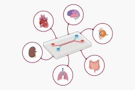
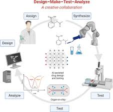

Animal Abuse instance:
On March 15, 2026, activitsts under the coalition to save the Ridglan Dogs claimed to have rescued 23 beagles from inhumane conditions and painful futures in biomedical research. Due to their small size, docile and forgiving temperment, and submissive behavior, beagles are easy to handle and house . Among the 2,500 beagles housed in Rigland Farms, 23 were temporarily liberated and the remaning few may not have been spared an eventual guillotine.


Organ-on-a-Chip
Organ-on-a-Chip (OOC) is an emerging technology that uses tiny laboratory devices lined with living human cells to simulate how organs function.

Artificial Intelligence in Drug Testing
Artificial Intelligence is a growing technology that helps scientists predict how drugs will affect the human body without using animals.
Computer Simulations
Computer simulations use mathematical models and scientific knowledge to recreate how the human body reacts to drugs.
History of Animal Testing: It’ll blow your mind.
In 1937, a pharmaceutical company in the USA created a drinkable product that contained diethylene glycol (DEG), which is poisonous to humans. They released the product and a large number of individuals who consumed it were poisoned and about a hundred people died. As a result of this event, the 1938 Federal Food, Drug, and Cosmetic Act requires products to be safety tested on animals before they are marketed. This event and more is what made drug testing on animals popular in the twentieth century. Using animals for biomedical research has become heavily criticized by animal protection and animal rights groups.